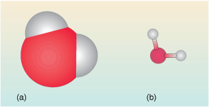

3.1 Interpreting chemical formulas
Many people, even if they have no chemistry background whatsoever will tell you the formula of water is H2O.
But what does this really mean?
In essence it is like all chemical formulas – a representation of the chemical compound – a type of shorthand notation.
A molecule of water is made up of an oxygen atom to which is attached two hydrogen atoms. The oxygen atom is in the middle.
In Figure 10 the water is represented in two different ways – these are depictions of the water molecule commonly used by chemists.
The first (Figure 10a) is a space-filling view. It shows the space occupied by the clouds of electrons surrounding the atoms in the molecule.
Why is the central oxygen atom larger than the hydrogen atoms?
Hydrogen has just one electron whereas oxygen has eight, so the space occupied by the electrons in oxygen, and hence the size of the atom is much larger.
The second view (Figure 10 b) is called a ball-and-stick model. It is perhaps less ‘realistic’ but has the major advantage that the relative positions of the centres of the atoms in the water molecule can be seen more easily. It also represents the geometry of the molecule. The angle between the three atoms in the water molecule is about 104o. This is called the bond angle.

So in the formula (H2O), the atoms of the molecule are represented by their chemical symbols: H for hydrogen and O for oxygen. As you saw earlier, the subscript 2 indicates that there are two hydrogen atoms in the formula. So a subscript applies to whatever element comes immediately before the subscript. And where there is no subscript shown there is assumed to be a subscript 1. So in the formula H2O for water, two hydrogen atoms and one oxygen atom are represented.
Formulas don’t have to include subscripts, for example carbon monoxide CO where there is simply one carbon atom bonded to one oxygen atom.
A more complex formula is that of calcium nitrate, Ca(NO3)2 . This is an ionic solid and the components are Ca2+ and NO3-.
Breaking the formula down – ignoring the charges for the moment.
There is no subscript following Ca, so the assumption is that there is just one calcium represented in the formula.
However the unit ‘(NO3)2’, needs a little unravelling.
There are three oxygen atoms and one nitrogen atom N (no written subscript so assumed to be 1) in the NO3 unit.
The subscript 2 indicates there are two of everything that comes before it. In other words what’s inside the brackets is doubled up – there are two (NO3) units for every calcium.
To summarise, the formula represents one calcium atom, two nitrogen atoms and six oxygen atoms. The reason for writing Ca(NO3 )2 rather than CaN2O6 is that, in the compound calcium nitrate, each one of the two nitrogen atoms is attached to three oxygen atoms.
Thus the chemical formula can convey some structural information too.
In terms of the ions involved, can you suggest why the contents of the brackets are multiplied by 2?
Calcium nitrate itself (has to be) un-charged, and looking at its components, the calcium cations have a charge of +2 and the nitrate group has a charge of -1, so you need two of the latter for every calcium cation to satisfy this condition.
Now you have a feel for what formulas represent, let’s now have a look at why compounds have specific formulas.
OpenLearn - Discovering chemistry
 Except for third party materials and otherwise, this content is made available under a Creative Commons Attribution-NonCommercial-ShareAlike 4.0 Licence, full copyright detail can be found in the acknowledgements section. Please see full copyright statement for details.
Except for third party materials and otherwise, this content is made available under a Creative Commons Attribution-NonCommercial-ShareAlike 4.0 Licence, full copyright detail can be found in the acknowledgements section. Please see full copyright statement for details.